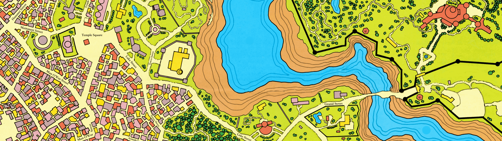
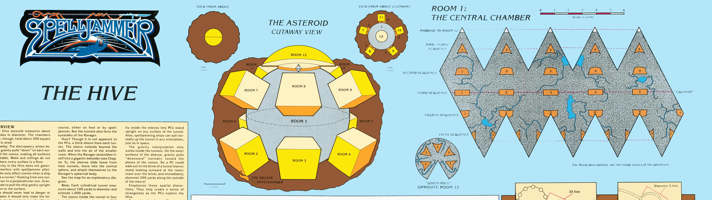
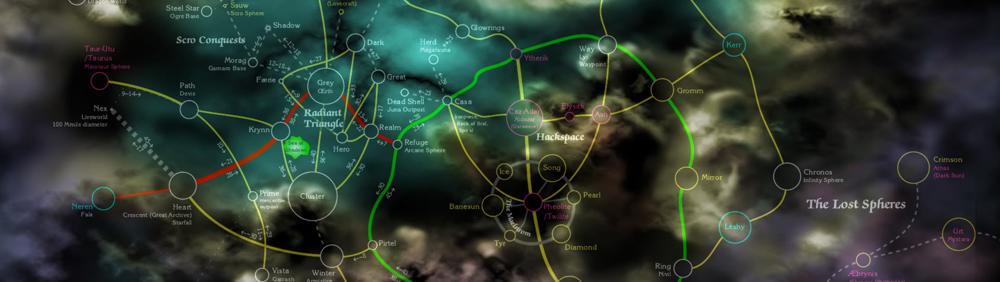
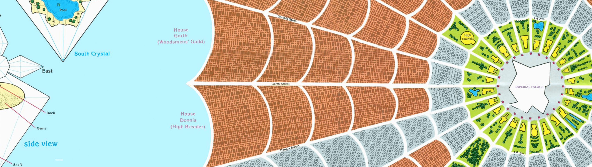
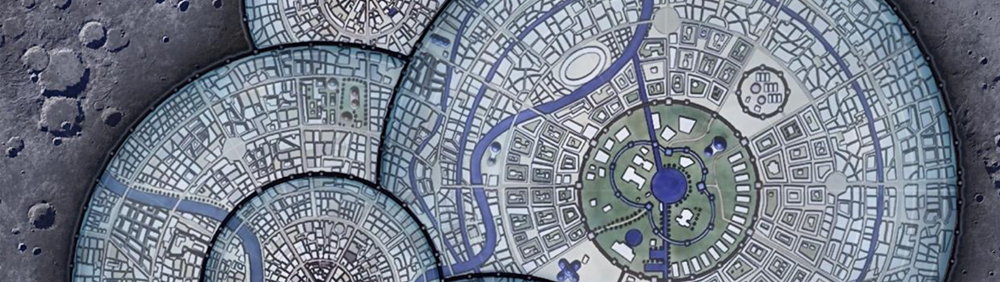

Locations
Rock of Bral
It is said the Rock of Bral was one of the asteroids making up the Tears of Selûne, orbiting Toril behind it's moon, a city build upon the rememnants of a human pirate empire and before that countless, more alien, civilizations. This heritage is reflected in the meltingpot Bral now is with races from Mind Flayers to humans inhabiting the city in (relative) peace.
Above is the official topside map with completely recolored with relabeled streets. Below is a cleaned-up version of the official numbered full map, and two prettified versions of an old homebrew map of the top side and lower side of Bral.
File: 4 Maps of Bral (9.3 MB ZIP)
Sources: TSR's Spelljammer: Wildspace and Duane VanderPol, but recolorized by Andrew Simone (me)
The Hive
This asteroid drifts through space, the remnants of the nation of Sazaur, once led by the Hive Mother, a powerful Beholder Queen. Since her passing, the Hive drifts hoping one day to reclaim the glory they knew when their Queen once lived.
If you plan to run the adventure this is from, then you should take a look at these great DM Notes.
File: The Hive (1.2 MB JPG)
Sources: TSR's SJA1: Wildspace
Wildspace
Wildspace, the final frontier, a place so enourmous it defies even the most detailed of maps. This may not match, to the letter, Spelljammer canon, but who can say how its has evolved since the earliest days of space travel?
File: 2 Maps of Wildspace (3.36 MB ZIP)
Sources: Boozehound Blue posted the above map, but it appears to be based off Nerik's work.
Crystal Spheres
Thirteen Crystal Sphere maps that match some of the locations in the Wildspace map above.
File: 13 Crystal Sphere Maps (13.1 MB ZIP)
Sources: Vtsimz02
The Imperial City
The Imperial City of Vodoni, the capital of a violent and bloody thirsty empire, that tries to conquer everything it encounters. They are a dangerous people who practice twisted magics to bend the will of nature to their cause, not many have lived to tell the tail of their Vodoni enforcers: a half-man, half-wolf beast-warriors.
File: The Imperial City (1.58 MB JPG)
Sources: TSR's SJA4: Under the Dark Fist
Moon City
A ready made moon city of domed distracts. It was a photoshop of Sarkamand by Sapiento and Mango Moon Resource 2 by KingMango (both originals available on Deviant art).
File: Moon City (395 KB JPG)
Sources: TheShadyMerchant